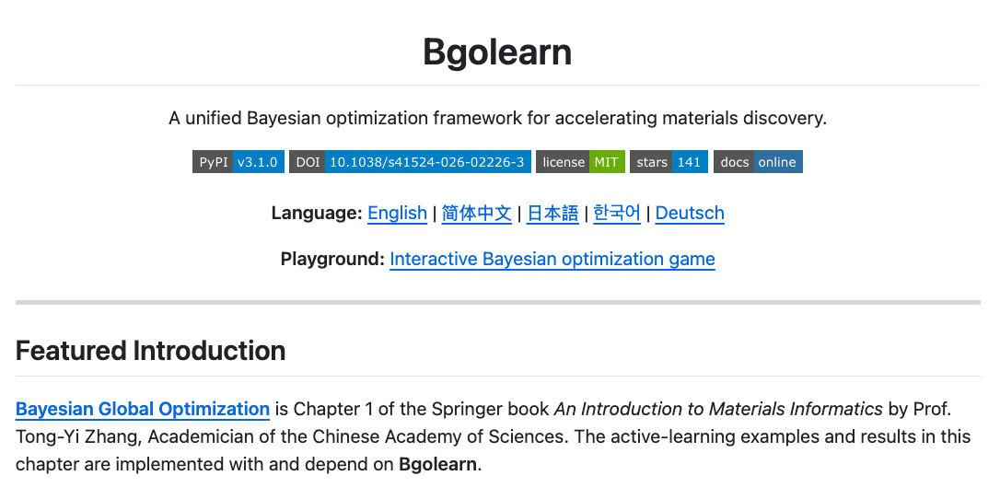
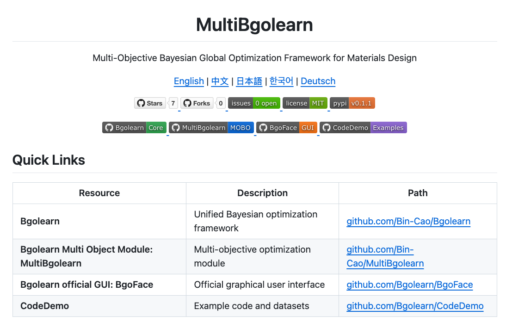
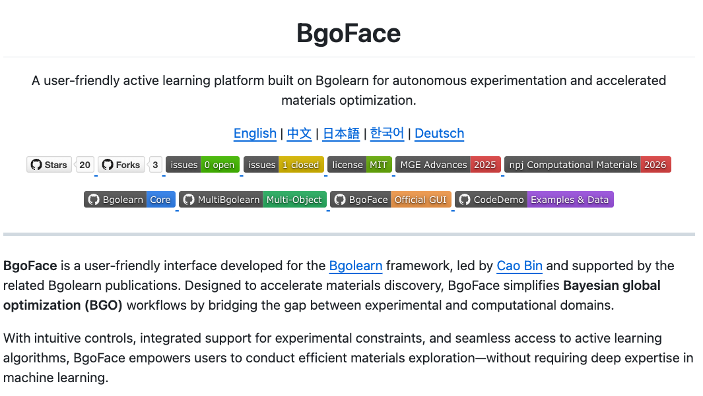

Bgolearn
Regression, classification, and efficiency tools for material property prediction and analysis.

Open-source · Materials Informatics
A practical Bayesian optimization toolkit for navigating complex material design spaces with fewer, more informed experiments.
A focused toolkit
Bgolearn brings regression, classification, and multi-objective Bayesian optimization into one approachable workflow. Built for researchers and engineers who want to explore material properties and process parameters efficiently.
The ecosystem
Choose a focused module, or combine them to move from analysis to multi-objective discovery.
Regression, classification, and efficiency tools for material property prediction and analysis.

Explore several competing objectives at once, with flexible surrogate model selection.

A visual interface that makes running optimization tasks and reading results more intuitive.

Get started
Use pip to add the core toolkit or its multi-objective extension to your environment.
$ pip install Bgolearn
$ pip install MultiBgolearnInteractive learning
Explore the ideas behind sequential decision-making in an interactive Bayesian optimization game.
Learn & build
Research-oriented tools for data-driven materials discovery, experimental design, and virtual screening.
Representative applications
Bgolearn has supported a growing set of materials science and engineering studies.
@article{Cao2026Bgolearn,
author = {Bin Cao and Jie Xiong and Jiaxuan Ma and Yuan Tian and Yirui Hu and Mengwei He and Longhan Zhang and Jiayu Wang and Jian Hui and Li Liu and Dezhen Xue and Turab Lookman and Jun Wang and Tong-Yi Zhang},
title = {Bgolearn: a unified Bayesian optimization framework for accelerating materials discovery},
journal = {npj Computational Materials}, year = {2026},
doi = {10.1038/s41524-026-02226-3}, url = {https://doi.org/10.1038/s41524-026-02226-3}
}Bgolearn was selected for the Open-Source Artificial Intelligence Support Program (2025), supported by the Shanghai Municipal Commission of Economy and Informatization. Read announcement →
Recognition


Creator
Research Scientist working at the intersection of AI and materials science, with a focus on crystallography, graph representation learning, and Bayesian optimization. Visit Bin Cao’s personal website →
Questions or collaboration
For project details and support, get in touch with Dr. Bin Cao.